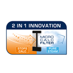
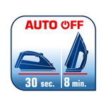
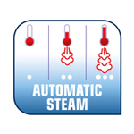
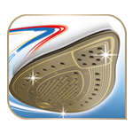
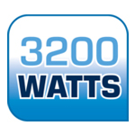
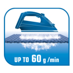
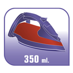

<style type="text/css">.product-description {
  max-width: 1200px;
  margin: 0 auto;
  padding: 40px 20px;
  background-color: #fff;
  color: #333;
}

.feature-grid {
  display: grid;
  grid-template-columns: repeat(4, 1fr);
  gap: 30px;
}

.feature-item {
  text-align: center;
  background-color: #ffffff;
  border-radius: 12px;
  padding: 20px;
  box-shadow: 0 3px 10px rgba(0, 0, 0, 0.08);
  transition: transform 0.3s ease, box-shadow 0.3s ease;
}

.feature-item:hover {
  transform: translateY(-5px);
  box-shadow: 0 5px 15px rgba(0, 0, 0, 0.15);
}

.feature-item img {
  width: 60%;
  height: auto;
  border-radius: 10px;
  margin-bottom: 15px;
}

.feature-item h5 {
  font-size: 1.1rem;
  color: #302f2f;
  font-weight: 600;
  margin-bottom: 10px;
}

.feature-item p {
  font-size: 0.95rem;
  line-height: 1.6;
  color: #555;
}

@media (max-width: 800px) {
  .feature-grid {
    grid-template-columns: 1fr;
  }
}
</style>
<section class="product-description-title" div="">
<h4><strong>TEFAL PURE MAX: Buharın Doğal G&uuml;c&uuml;</strong></h4>

<p>Tefal&rsquo;in y&uuml;ksek performanslı buhar g&uuml;c&uuml; sunan buharlı &uuml;t&uuml;s&uuml; PURE MAX &ccedil;amaşırlar &uuml;zerindeki kire&ccedil; lekelerine son veren ve m&uuml;kemmel sonu&ccedil;lar sağlayan birinci sınıf bir &uuml;t&uuml;d&uuml;r Yeni Micro-Calc Filtre sistemi buharın %100&rsquo;&uuml;n&uuml; filtreleyerek, tortu ve lekelerin &ouml;nlenmesine yardımcı olan olağan&uuml;st&uuml; bir kire&ccedil; y&ouml;netimi ve muhteşem &uuml;t&uuml; sonu&ccedil;ları sağlar. 3200W g&uuml;&ccedil;, ısınma s&uuml;resini hızlandırır; 60 g/dk&rsquo;ye kadar değişken buhar &ccedil;ıkışı son derece etkili bir &uuml;t&uuml;leme deneyimi sunarken, 290 g şok buhar &ccedil;ıkışı inat&ccedil;ı kırışıklıkları rahatlıkla a&ccedil;abilir. Bakım gerektirmeyen Durilium AirGlide Autoclean taban plakasına, &uuml;st d&uuml;zeyde rahatlık i&ccedil;in gelişmiş &ouml;zelliklere ve saf buhar g&uuml;c&uuml;ne sahip buharlı &uuml;t&uuml;y&uuml; keşfedin.<br />
&Uuml;t&uuml; i&ccedil; kanallarındaki &uuml;retim kalıntılarını, tozları, su sızıntılarını &ouml;nlemek i&ccedil;in &Uuml;t&uuml;n&uuml;n ilk buhar temizliğini yapmayı unutmayın. &Ouml;ncelikle temiz i&ccedil;me suyu ile hazneyi maksimum seviyeye kadar doldurun. &Uuml;t&uuml;y&uuml; fişe takın ve hen&uuml;z buhar fonksiyonunu a&ccedil;madan sıcaklık ayarını en y&uuml;ksek seviyeye (pamuk/keten) getirerek tamamen ısınmasını bekleyin. Isındıktan sonra &uuml;t&uuml;y&uuml; lavabonun &uuml;zerinde tutarak &quot;self-clean&quot; veya buhar d&uuml;ğmesine uzun s&uuml;re basın. İ&ccedil;indeki su ve kalıntılar tabandan dışarı &ccedil;ıkacaktır. İşlem sonrası &uuml;t&uuml;y&uuml; soğumaya bırakın ve tabanını temiz bir bezle silin.</p>
</section>

<section class="product-description">
<div class="feature-grid">
<div class="feature-item">
<h5>&Ouml;zel 2&rsquo;si 1 arada Micro-Kire&ccedil; Filtresi</h5>

<p>&Ccedil;amaşırlardaki kire&ccedil; lekelerine son vermek i&ccedil;in %100 filtrelenmiş buhar g&ouml;nderimi* Yepyeni &ouml;zel kire&ccedil; y&ouml;netim sistemi, 2&rsquo;si 1 arada etki i&ccedil;in yeni teknoloji Micro-Kire&ccedil; Filtresi kullanır: kire&ccedil; filtre tarafından durdurulur ve &ccedil;amaşırlara saf buhar verilir. Micro-Cac Filtresi kolayca &ccedil;ıkarılabilir ve temizlemesi kolaydır. Kolay &uuml;t&uuml; yapmanın ve olağan&uuml;st&uuml; sonu&ccedil;ların tadını &ccedil;ıkarın! *Kire&ccedil; partik&uuml;llerini durdurur &lt; 0,2 mm</p>
</div>

<div class="feature-item">
<h5>Ekstra g&uuml;venlik i&ccedil;in akıllı otomatik kapanma</h5>

<p>Yanlışlıkla g&ouml;zetimsiz bırakıldığında &uuml;t&uuml; otomatik olarak kapanır. Dikey konumda bırakıldıysa 8 dakika sonra kapanır. Tabanı yere temas halinde ya da yan durumda bırakılmışsa yalnızca 30 saniyede kapanır.</p>
</div>

<div class="feature-item">
<h5>Otomatik Buhar Ayarı: her kıyafet i&ccedil;in doğru miktarda buhar</h5>

<p>Otomatik buhar işleviyle buhar miktarını se&ccedil;mek i&ccedil;in endişe etmenize gerek kalmaz. Yalnızca kumaş t&uuml;r&uuml;n&uuml;ze uygun sıcaklığı se&ccedil;in ve gerisini &uuml;t&uuml;n&uuml;ze bırakın.</p>
</div>

<div class="feature-item">
<h5>Durilium AirGlide Autoclean taban plakası: hızlı ve kolay kayma</h5>

<p>Durilium AirGlide Teknolojisi hızlı ve kolay &uuml;t&uuml; yapmak i&ccedil;in iyi şekilde kayma sağlar. Ayrıca etkili &uuml;t&uuml;leme i&ccedil;in ideal buhar dağılımı sunar. Tefal&rsquo;in buluşu olan Autoclean katalitik kaplama, taban plakanızın zaman i&ccedil;inde lekesiz ve m&uuml;kemmel durumda kalmasını sağlar.</p>
</div>

<div class="feature-item">
<h5>Tefal&#39;in g&uuml;&ccedil;l&uuml; buharlı &uuml;t&uuml;s&uuml;</h5>

<p>Hızlı ısınma ve y&uuml;ksek performans i&ccedil;in 3200W</p>
</div>

<div class="feature-item">
<h5>Lekesiz kumaşlar i&ccedil;in damlatmaz taban</h5>

<p>Damlatmaz &ouml;zelliği &uuml;t&uuml;lerken kumaşınıza su damlamasına ve leke oluşmasına engel olur.</p>
</div>

<div class="feature-item">
<h5>Kırışıklıkların giderilmesini kolaylaştıran g&uuml;&ccedil;l&uuml; ve s&uuml;rekli buhar &ccedil;ıkışı</h5>

<p>60 g/dk&rsquo;lık s&uuml;rekli buhar &ccedil;ıkışı, t&uuml;m kırışıklıkları etkili bir şekilde gidermek i&ccedil;in ideal miktarda sabit buhar &ccedil;ıkışı sağlar.</p>
</div>

<div class="feature-item">
<h5>Uzun s&uuml;reli &uuml;t&uuml;lemeler i&ccedil;in daha geniş su haznesi</h5>

<p>350 ml kapasiteli su haznesi sayesinde rahatlıkla uzun s&uuml;re &uuml;t&uuml; yapabilirsiniz.</p>
</div>
</div>
</section>
